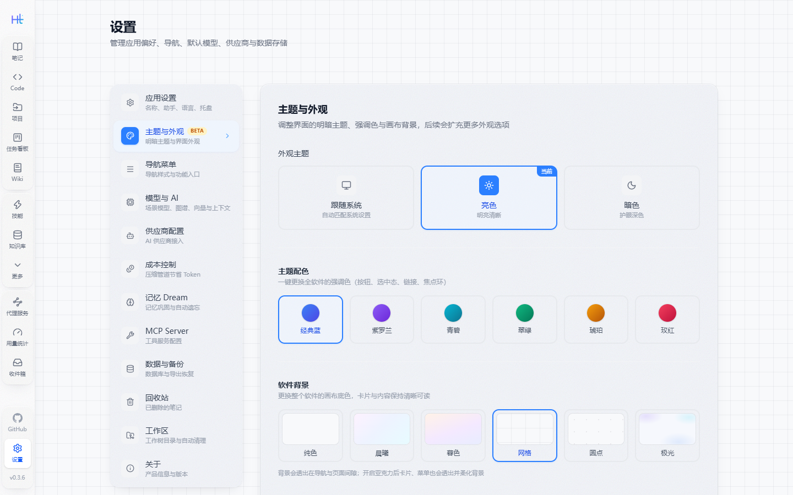
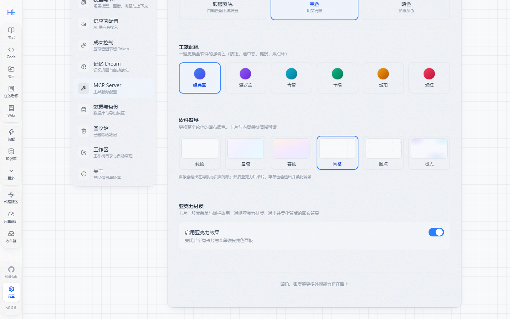

主题与外观
设置 → 主题与外观（Beta）管两件事：软件的「配色与材质」，以及「导航菜单」的排布样式。全部选项即时生效，并随账号数据一起持久化——换机器、重开应用都在。
明暗主题
| 选项 | 说明 |
|---|---|
| 跟随系统 | 读取操作系统的明暗偏好，系统切换时界面自动跟随 |
| 浅色 | 固定浅色 |
| 暗色 | 固定暗色 |
主题配色
6 种强调色：经典蓝、紫、青、翠绿、琥珀、玫红。实现上是把 Tailwind 主题里的 --color-blue-* / --color-indigo-* 整套色板按色相平移 + 彩度缩放，因此按钮、选中态、链接、焦点环会一次性换色，不需要逐处改类名。

画布背景
6 种画布：纯白、黎明、暮色、网格、圆点、极光。背景画在 body 上，页面主内容区保持透明，于是卡片与面板之间会透出画布颜色——这也是亚克力材质能看到底的原因。
| 画布 | 浅色 | 暗色 |
|---|---|---|
| 纯白 | 近白底色 | 近黑底色 |
| 黎明 / 暮色 | 粉→蓝→青 / 暖橙→紫→蓝渐变 | 同色系深色渐变 |
| 网格 / 圆点 | 26px / 22px 浅色纹理 | 同规格深色纹理 |
| 极光 | 三团柔光（紫 / 青 / 蓝） | 同色系高饱和柔光 |
亚克力材质
一个开关，管全软件的「毛玻璃」：卡片、面板、胶囊轨道、导航栏与导轨、输入框、开关、筛选芯片都会变成半透明材质——底色 + 背景模糊提色 + 细噪点 + 顶部高光，画布颜色从材质里透出来。
- 材质画在
::before上：backdrop-filter放在宿主身上会把宿主变成浮层定位的包含块，下拉与浮层会错位 - 表单控件（
input/textarea）不渲染伪元素，材质直接落在宿主上，并关掉原生白底 - 导航栏与左导轨用更实的材质，浅色画布下才不会「消失」；胶囊轨道更透，让画布颜色透上来
- 关掉开关后所有表面回到纯白卡片 / 灰轨道，没有任何模糊开销

导航菜单
同一页里还管导航的排布，改完立刻生效：
| 选项 | 取值 |
|---|---|
| 主导航样式 | 顶部横栏（默认）/ 垂直胶囊（导航移到窗口最左侧，图标与文字纵向堆叠）/ 垂直列表（导航移到窗口最左侧，图标与标题同行排列） |
| 二级菜单样式 | 平铺（父子菜单两栏并排）/ 树形（合并为一棵树，展开父级显示子项） |
| 固定到导航的功能 | 未选中的功能从「更多」菜单快速跳转；笔记、对话、Code、工作流、搜索始终固定显示 |
外观设置目前标注 Beta：选项与默认值还可能随版本调整，但数据都会持久化，不会因为升级丢失。
设置存在哪
- 主题、配色、画布、亚克力开关、导航样式都写进后端设置表，与「应用设置」里的名称、语言同一套机制
- 前端启动时会预热这些设置：刷新或新安装后第一次进入界面就是保存过的外观，不会先闪一下默认皮肤
- 接口：
GET /api/settings读取，PUT /api/settings写入（键Theme/ThemeAccent/Background/GlassEffect/NavStyle/SecondaryMenuStyle）